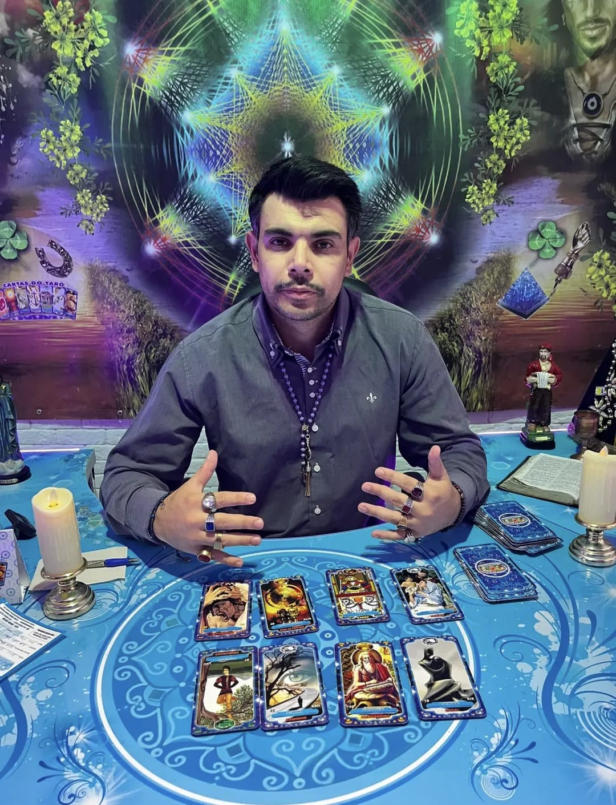

Amor e relacionamentos
Compreenda sentimentos, conflitos, conexões e possibilidades afetivas.
Tarô cigano • orientação e autoconhecimento
Uma leitura feita com atenção, respeito e sensibilidade para ajudar você a compreender situações, possibilidades e escolhas em diferentes áreas da sua vida.
✦ Atendimento acolhedor, confidencial e personalizado.

Sobre o tarólogo
Sou o Tarólogo Marcello Bredley e utilizo as cartas do Tarô Cigano para ajudar pessoas que buscam orientação, clareza e uma nova compreensão sobre os seus caminhos.
Cada consulta é realizada de forma individual, respeitosa e confidencial. Meu propósito é acolher você, analisar as energias e possibilidades reveladas pelas cartas e oferecer uma orientação que possa contribuir para suas decisões e para diferentes áreas da sua vida.
Conversar com Marcello ↗Possibilidades de orientação
As cartas ampliam sua percepção sobre o momento presente e ajudam a observar caminhos com mais consciência.
Compreenda sentimentos, conflitos, conexões e possibilidades afetivas.
Encontre clareza diante de mudanças, escolhas e novos caminhos profissionais.
Analise energias, comportamentos e possibilidades relacionadas à vida financeira.
Observe diferentes possibilidades antes de tomar uma decisão importante.
Reflita sobre situações, relações e momentos que precisam de maior compreensão.
Perceba padrões, sentimentos e aspectos internos que influenciam sua caminhada.
Simples, pessoal e acolhedor
Clique no botão do WhatsApp e envie sua mensagem para o Marcello.
Converse sobre o assunto e escolha o melhor horário disponível.
Tenha uma leitura individual e voltada às questões que deseja compreender.
Uma conversa com você
Conheça um pouco mais sobre o trabalho do Marcello e descubra como uma consulta pode ajudar você a enxergar seus caminhos com mais clareza.
Experiências compartilhadas
“[Inserir depoimento autorizado de cliente]”[Inserir nome ou iniciais]Depoimento editável
“[Inserir depoimento autorizado de cliente]”[Inserir nome ou iniciais]Depoimento editável
Um novo olhar começa aqui
Permita-se compreender melhor os seus caminhos, sentimentos e possibilidades por meio de uma consulta individual com o Tarólogo Marcello Bredley.
Falar com Marcello agora ↗Dúvidas frequentes
Se ainda tiver alguma dúvida, Marcello estará disponível para conversar pelo WhatsApp.
Clique em qualquer botão do WhatsApp desta página e fale diretamente com Marcello para verificar os horários disponíveis.
Amor, relacionamentos, trabalho, finanças, decisões, vida pessoal, familiar e autoconhecimento, sempre como orientação e reflexão.
Sim. Cada atendimento é conduzido de forma individual, respeitosa e confidencial.
Você pode chegar com uma questão específica ou conversar com Marcello para organizar o tema que deseja compreender.
Formato, duração, disponibilidade e valores devem ser confirmados diretamente com Marcello pelo WhatsApp.
Vamos conversar?
Conte brevemente o que você busca e dê o primeiro passo para uma nova perspectiva.
WhatsApp (41) 99685-8734